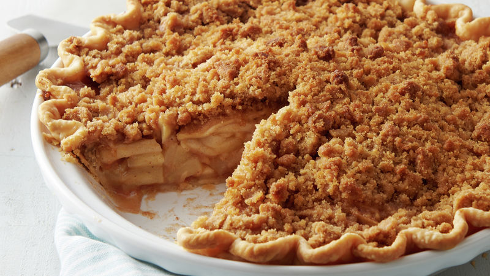

Dutch apple pie

Description
This pie is baked in a brown grocery sack. It is so delicious.
Ingredients
- 5 large Granny Smith apples - peeled, cored and sliced
- ½ cup white sugar
- 2 tablespoons all-purpose flour
- ½ teaspoon ground cinnamon
- 2 tablespoons lemon juice
- ½ cup all-purpose flour
- ½ cup butter
- 1 recipe pastry for a 9 inch single crust pie
Steps
- Preheat oven to 425 degrees F (220 degrees C).
- Combine 1/2 cup sugar, 2 tablespoons flour, and cinnamon. Pour over apples in crust. Sprinkle lemon juice on top.
- Cut 1/2 cup sugar, 1/2 cup flour, and 1/2 cup butter or margarine together, and top pie with the mixture.
- Take two 15 inch pieces of parchment paper and enclose pie; fold edges up 3 times. Place on a baking sheet.
-
Bake in preheated oven for 1 hour. Remove from oven, split parchment open and cool pie on wire rack.
DO NOT open parchment covering while baking! Serve warm, or at room temperature.